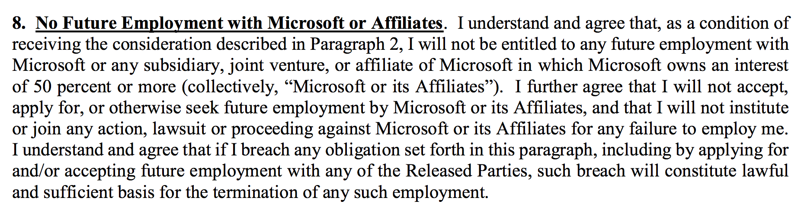

我与微软的对峙，终于以我的“有条件离职”而告终，现在微软把事情弄得相当丑陋，我不想再坏自己心情，所以抛开他们不理了。“有条件离职”的意思是，微软必须满足我的条件，我才会签字表示“自愿离职”。看来微软真是目光短浅的公司，宁愿放弃优秀的人才和极其可靠的代码，也不愿意给人合理的报酬和职称。或者也许我的代码写得实在太清晰了，所以他们觉得不需要我就可以搞定一切吧，那我祝他们好运了。
由于入职的时间不够一年（7 月份到一年），按照 offer letter，如果我“自愿离职”，微软就有权收回入职时给我的“sign-on bonus”，价值 2 万 5 千美元。不过如果不是自愿离职的，比如被开掉或者裁掉，那就不用还这个钱。在我看来，这个 sign-on bonus 根本不应该退。微软在谈工资的时候，一直把这个 sign-on bonus 和其它 bonus 算在我“第一年的收入”上面，以此来说服我他们给的工资还算差强人意。直到给 offer letter 的时候，才悄悄加进一个条款，说这个 sign-on bonus 是不满一年要退的。
我这几个月日夜辛劳，付出的额外工作时间的价值，已经远远超过 sign-on bonus 的数额，更不要说我放弃了今年的 performance bonus，而且我已经工作了 9 个月，所以就算退也不应该全部退，而应该是按比例。因此，我对于“自愿离职”提出了一个很简单的条件，我要求微软放弃收回 sign-on bonus，这样我才会给他们签字，表示自愿离职。否则他们就必须通过其他手段开掉我，那样因为不是“自愿离职”，我就不需要退他们 sign-on bonus。
结果他们“同意”了，然而却为此附加了许多的条件，把这些都写进了我的离职协议，要求我签字。这些条件非常的恶心，特别是第 8 条：从今以后我不得再加入微软，它的下属企业，附属公司，以及微软股份超过 50% 的合作公司，如果加入了他们就有权赶我走。

很显然，我这辈子再也不会加入微软了。我要是成立了公司，也永远不会卖给微软。光是想到要用 Windows 工作，要和吹牛手段极高，写垃圾代码的印度阿三共事，我就不会再做这样的傻事了 :P 但这些应该是我说了算的，现在要我签这样的协议，永久的阻止我进入微软及其子公司，就是在严重侵犯我的合法权益和尊严，这不是明摆着在欺负人是什么？以为不停的收购其它公司，靠这个协议就可以把我饿死了？几个经验丰富的朋友看了这个条款，都说从来没见过任何公司使用这样的离职条款，这是非常险恶的霸王条款。
另外，协议还要求我不能鄙视和嘲笑微软，不能协助现在，过去或者将来的微软员工对公司提出抱怨或者顾虑，承认微软没有犯任何错误，不得用任何原因起诉微软，等等封嘴协议。由此可见，虽然美国有所谓“言论自由”，然而你的自由却是被金钱牢牢地控制的。
当然，我严词拒绝了签这个协议。我对他们说：“这个协议要我放弃如此多的法定权益，我不能签，给我再多钱也不能签！我完全可以算是放假，等到 7 月满一年的时候再离职，就不需要还你们 sign-on bonus 了。” 然而 HR 回话说：“你的 email 里面已经说你要离职，我们已经同意了，所以等到 7 月不再是一个选择。” 呵呵，从来没有听说自愿离职可以发个 email，不用签字的。另外，我的 email 里面说的其实是：“如果你们同意不收回 sign-on bonus，我就离职。” 这是有条件的，微软并没有“无条件满足”我的条件，而是在此之上又提出了极其恶毒的条件。我不能接受这些条件，所以我也就不会主动离职。看清楚这里的逻辑了吗？后来，我就发现 HR 开始肆意歪曲我的话，想造成一种我已经主动离职的假象，这样他们就可以利用这个 sign-on bonus 的问题，来逼迫我签这个恶心的协议。
与微软 HR 和上司们的谈话，从我面试的时候开始就已经充满了谎言和欺诈，各种不爽。撒谎找借口压低职称和工资。号称六个月升职，却完全没有动静。上司们为了树立威信，对自己的经历和成就进行夸大。故意不让我和其它团队面试。各种讨价还价贬低人的价值。在 offer letter 上做文章。再加上入职后的各种奇葩经历，超时工作，各种变相的不尊重，拿一些 principal engineer 甚至印度小菜鸟跟我比…… 这一切都让我恶心而厌倦。要不是我早已经决定在美国只看最后一个大公司，我是肯定不会加入微软的。
我曾经一度讨厌微软和 Windows，后来却由于很多人说微软的好话，说他们尊重人才，说 Windows 其实改进了很多了，微软不再是以前的微软，才将信将疑的决定去试试。今天我终于明白了，微软始终没有变过，它一直是那个邪恶的霸王公司。即使现在风光不再，它的本质从来没有变过。Windows 和其它微软软件的质量，也从来没有变过。看起来有一些好的想法，然而它们的实现，全都糟蹋在水平低劣的印度廉价劳动力手中，糟蹋在他们的各种勾心斗角和政治斗争中了。这就是为什么微软的东西那么难用，问题那么多，出了问题还不知道怎么回事。
你可能以为微软是大公司，很多人事上的事情应该大度不计较，然而微软 HR 和 recruiter 对各种事情的处理方式，其实比起很小的 startup 还要不规范和恶毒，各种抠门，威逼欺诈，隐藏信息，甚至肆意歪曲。微软不能靠自己的魅力留住人才，就想方设法设置各种讨厌的限制，比如 H1-b 和绿卡程序都用最慢的方式给你办，让你走不掉，或者要求不满一年全额退回 sign-on bonus，或者干脆用 L1 签证从印度搬运不能换工作的奴隶过来。想以这样的方式来阻碍人才的流失，可想而知留下来的都是什么样的人。
虽然这个离职协议的内容包含了“保密”条款，要我不得向其他人透露协议的内容，然而由于我没有签字，所以这个协议没有法律效力，我也没有必要为他们保密。我有权把协议的内容公之于众，以警世人。很多人也许还没见过微软的离职协议吧？因为签了的人就不能再分享它。我没有签字，所以现在大家可以见识一下了。很多人还以为微软是一个仁慈的雇主…… 我要告诫大家，如果有协议让你放弃如此多的合法权益，请不要为了一点钱就签它。这不只会祸害你自己，还会伤害其他跟你同样经历的人！
你可以在这里下载这个离职协议的原文（未签字）。微软为什么这么想让人放弃自己合法权益？难道他们真的做错了什么可以起诉的？另外，下一步微软可能会逼迫我退还 sign-on bonus。钱不是大问题，然而看到他们这种威逼欺诈歪曲要挟的气势，我就偏不退给他们 :P 懂法律的朋友或者律师，欢迎向我提出你们的建议。我也欢迎有同感的微软的中国朋友们跟我联系，我对你们没有成见，希望我的经历给你们提供有益的信息。祝你们一切都好，有缘我们在别的地方再会。
（如果你觉得这篇文章对你有帮助，可以自愿付费）